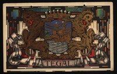

Pada masa lalu, Tegal adalah desa kecil yang terletak di tepi muara Kali Gung, dengan nama Tetegal. Tetegal merupakan bandar yang mengeluarkan hasil bumi, yang semula perairannya diatur oleh Ki Gede Sebayu saat berdiam di Danawarih. Karena pada saat itu daerah yang luas umumnya merupakan daerah ladang (Tetegalan), maka oleh Ki Gede Sebayu dinamakan Tegal. Versi lain mengatakan bahwa istilah Tegal berawal dari kedatangan Tome Pires, pedagang asal Portugis ke sebuah pelabuhan tua di muara Kali Gung pada abad ke-15, dimana dia menyebut pelabuhan tersebut dengan nama Teteguall.
Setelah daerah itu maju, Ki Gede Sebayu diangkat menjadi Jurudemung (demang) atau sesepuh oleh Bupati Pemalang. Saat itu Tetegal merupakan bagian dari Kabupaten Pemalang. Pengangkatan Ki Gede Sebayu menjadi Jurudemung tersebut terjadi pada 15 Sapar tahun Jawa 988, atau 12 April 1580 Masehi. Oleh karenanya, setiap tanggal 12 April diperingati sebagai Hari Jadi Kota Tegal. Tak lama Ki Gede Sebayu pun meninggal dunia, dan putranya yakni Ki Gede Hanggawana ditunjuk sebagai penggantinya.
Semakin lama, Hasil bumi menjadi berlipat, Tegal banyak menimbun hasil bumi yang dikirim ke luar daerah dan penduduknya makin banyak, akhirnya berubah menjadi kota yang cukup bisa diharapkan di kemudian hari. Pada saat itu, Tegal memiliki Pelabuhan yang ramai di muara Kali Gung sebelah barat kota Tegal, kini bernama Muaratua (Tegalsari), kemudian pindah ke Muara bagian timur atau Muara Bacin.
Masa kekuasaan Mataram dan Hindia Belanda

Lambang gemeente Tegal pada masa Hindia Belanda, ditetapkan pada tahun 1927.
Pada masa Kerajaan Mataram, wilayah Tegal menjadi bagian dari kekuasaannya. Dengan demikian maka kepala daerahnya diangkat oleh kerajaan dengan surat ketetapan raja. Pada masa pemerintahan kolonial, surat ketetapan itu dikeluarkan oleh pemerintah kolonial di Batavia. Tegal juga menjadi daerah yang ditunjuk Sultan Agung sebagai tempat untuk membawa beras dengan perahu yang diperlukan bagi persediaan pangan tentara Mataram Saat berperang melawan VOC di Batavia.
Pada tahun 1677 ketika Amangkurat II menandatangani kontrak dengan VOC, daerah Jepara dan Tegal merupakan suatu tempat yang tersisa di sepanjang pesisir utara Jawa yang belum dikuasai oleh Pasukan Trunojoyo. Perbatasan wilayah antara kompeni dan Mataram menggunakan patokan sungai Tjilosari (Ci Sanggarung). Berkat jasa VOC terhadap Mataram pada waktu membantu pemberontakan Trunojoyo, maka sekitar tahun 1680 VOC mengangkat dirinya sebagai penguasa di pesisir Jawa, termasuk di Tegal.
Di tempat inilah VOC membangun benteng yang kuat dan membangun pos perdagangan. Pada awalnya sekitar tahun 1680 masyarakat Eropa tinggal dan membangun benteng, sehingga keberadaan mereka cukup ekslusif. Keberadaan orang Eropa di benteng sejalan dengan kebijakan antara VOC dan Bupati Tegal untuk mengelompokkan pedagang Eropa dan tentara Eropa terpisah dari penduduk Jawa. Mereka tinggal dibenteng dan tidak seorangpun dapat masuk ke lokasi itu tanpa seijin VOC dan bupati. Dalam perkembangannya, orang Eropa kurang menyukai tinggal di dalam benteng, sehingga mereka pindah ke rumah yang dibuat permanen di kota. Adapun orang-orang Jawa tinggal di sebelah timur kampung kota dan orang-orang Cina tinggal di sebelah selatan yakni Patjinan (kini menjadi kampung Paweden di kelurahan Mintaragen). Sedangkan orang-orang Arab mulai berdatangan dan menetap di Tegal pada abad ke-18.
Tahun 1729, Tegal ditetapkan sebagai gewest (Pemerintah Daerah Tegal) dengan dipimpin oleh seorang Belanda. Kota Tegal ditetapkan sebagai ibukota gewest Tegal, dengan wilayah meliputi Pemalang, Tegal, dan Brebes. Sebagai Kepala gewest, diangkat J. Thierens sebagai Residen. Residen terakhir untuk gewest Tegal ialah G.J.P. Vallete. Pusat pemerintahan gewest Tegal saat itu berada Gedung Residen, yang sekarang menjadi Kantor DPRD Kota Tegal.
Pada tahun 1906, Tegal mendapatkan status sebagai gemeente berdasar Ordonantie tanggal 21 Februari 1906 dan Staatsblad 1906 No. 123 yang berlaku sampai tanggal 1 April 1906, dengan penduduk berjumlah 32.000 jiwa terdiri dari 27.700 jiwa penduduk asli yakni etnis Jawa, 2.700 jiwa etnis Cina, 1.000 jiwa etnis Arab dan Asia yang lain, serta 600 jiwa etnis Belanda (Eropa). Dalam pelaksanaan pemerintahan, dibentuk Dewan Kota (Gemunteraad), sedangkan yang menjadi kepala daerah adalah asisten residen yang membawahi Kabupaten Tegal.
Masa pendudukan Jepang
Kota Tegal menjadi salah satu daerah yang mengalami pergolakan revolusi pasca kemerdekaan, bersama dengan Brebes, Kabupaten Tegal, dan Pemalang. Keinginan utama masyarakat saat itu adalah mengganti pemerintahan yang tunduk pada Jepang dan Belanda dengan sistem pemerintahan yang baru dan merakyat oleh golongan islam, sosialis, dan komunis.
Hal tersebut didasari oleh keadaan masyarakat yang semakin miskin dari pemerintahan yang satu ke pemerintahan lainnya. Padahal, wilayah Tegal Raya menjadi bagian penting dalam pertumbuhan ekonomi Keresidenan Pekalongan dikarenakan banyaknya pabrik gula di wilayah ini. Selain itu, wilayah Tegal Raya juga dianggap sebagai wilayah steril dan terbebas dari pengaruh Jepang maupun Belanda pada saat itu, sehingga bisa digunakan untuk mengambil alih kekuasaan dari tangan Jepang atau Belanda. Peristiwa tersebut terjadi pada Oktober hingga Desember 1945 dan lebih dikenal dengan nama Peristiwa Tiga Daerah.
Undang-Undang Nomor 16 Tahun 1950 tanggal 14 Agustus 1950 tentang Pembentukan Daerah Kota Besar dalam lingkungan Jawa Barat, Jawa Tengah, Jawa Timur dan Daerah Istimewa Yogyakarta menetapkan tentang pembentukan pemerintahan daerah di Provinsi Jawa Tengah, termasuk Tegal. Dalam undang-undang tersebut, Kota Tegal ditetapkan menjadi Kotamadya sekaligus Ibukota Kabupaten Tegal, yang dimana pemerintahan Kabupaten berada di Kompleks Alun-alun, sedangkan pemerintahan Kotamadya menempati eks gedung gewest Tegal di Jalan Pemuda.
Tahun 1984, Pemerintah Republik Indonesia menginstruksikan pembentukan Kota Slawi sebagai ibukota baru Kabupaten Tegal, berdasarkan Peraturan Pemerintah Republik Indonesia nomor 2 Tahun 1984. Dengan ditetapkannya peraturan tersebut, beberapa fasilitas pemerintahan milik Kabupaten Tegal secara bertahap dipindahkan ke Slawi, membuat Kota Tegal memiliki pemerintahan yang berdiri sendiri. Pusat pemerintahan Kotamadya Tegal pun juga dipindahkan dari Jalan Pemuda ke eks Kantor Bupati Tegal di Kompleks Alun-alun di tahun 1987.
Dua tahun kemudian tepatnya pada tanggal 4 Februari 1986, Pemerintah Republik Indonesia menerbitkan Peraturan Pemerintah Republik Indonesia nomor 7 tahun 1986, yang berisi tentang perubahan batas wilayah Daerah Tingkat II Kota Tegal dan Daerah Tingkat II Kabupaten Tegal. Dengan berlakunya peraturan ini, wilayah kota Tegal diperluas menjadi 4 kelurahan dan 27 kecamatan, dengan memasukkan seluruh wilayah Kecamatan Sumurpanggang dan beberapa desa di Kecamatan Dukuhturi, Kabupaten Tegal, untuk bergabung dalam wilayah kota Tegal. 8 dari 15 wilayah desa di Kecamatan Sumurpanggang dilebur menjadi Kecamatan baru, yakni Margadana, sebagian sisanya tersebar di kecamatan Tegal Barat (Muarareja, Debong Lor dan Pesurungan Kidul) dan kecamatan Tegal Selatan (Keturen, Tunon, Kalinyamat Wetan, Debong Kidul dan Debong Kulon). sedangkan beberapa desa dari Kecamatan Dukuhturi (Bandung dan Debong Tengah) dimasukkan kedalam Kecamatan Tegal Selatan.
Masa setelah Kemerdekaan
Kota Tegal menjadi salah satu daerah yang mengalami pergolakan revolusi pasca kemerdekaan, bersama dengan Brebes, Kabupaten Tegal, dan Pemalang. Keinginan utama masyarakat saat itu adalah mengganti pemerintahan yang tunduk pada Jepang dan Belanda dengan sistem pemerintahan yang baru dan merakyat oleh golongan islam, sosialis, dan komunis.
Hal tersebut didasari oleh keadaan masyarakat yang semakin miskin dari pemerintahan yang satu ke pemerintahan lainnya. Padahal, wilayah Tegal Raya menjadi bagian penting dalam pertumbuhan ekonomi Keresidenan Pekalongan dikarenakan banyaknya pabrik gula di wilayah ini. Selain itu, wilayah Tegal Raya juga dianggap sebagai wilayah steril dan terbebas dari pengaruh Jepang maupun Belanda pada saat itu, sehingga bisa digunakan untuk mengambil alih kekuasaan dari tangan Jepang atau Belanda. Peristiwa tersebut terjadi pada Oktober hingga Desember 1945 dan lebih dikenal dengan nama Peristiwa Tiga Daerah.
Undang-Undang Nomor 16 Tahun 1950 tanggal 14 Agustus 1950 tentang Pembentukan Daerah Kota Besar dalam lingkungan Jawa Barat, Jawa Tengah, Jawa Timur dan Daerah Istimewa Yogyakarta menetapkan tentang pembentukan pemerintahan daerah di Provinsi Jawa Tengah, termasuk Tegal. Dalam undang-undang tersebut, Kota Tegal ditetapkan menjadi Kotamadya sekaligus Ibukota Kabupaten Tegal, yang dimana pemerintahan Kabupaten berada di Kompleks Alun-alun, sedangkan pemerintahan Kotamadya menempati eks gedung gewest Tegal di Jalan Pemuda.
Tahun 1984, Pemerintah Republik Indonesia menginstruksikan pembentukan Kota Slawi sebagai ibukota baru Kabupaten Tegal, berdasarkan Peraturan Pemerintah Republik Indonesia nomor 2 Tahun 1984. Dengan ditetapkannya peraturan tersebut, beberapa fasilitas pemerintahan milik Kabupaten Tegal secara bertahap dipindahkan ke Slawi, membuat Kota Tegal memiliki pemerintahan yang berdiri sendiri. Pusat pemerintahan Kotamadya Tegal pun juga dipindahkan dari Jalan Pemuda ke eks Kantor Bupati Tegal di Kompleks Alun-alun di tahun 1987.
Dua tahun kemudian tepatnya pada tanggal 4 Februari 1986, Pemerintah Republik Indonesia menerbitkan Peraturan Pemerintah Republik Indonesia nomor 7 tahun 1986, yang berisi tentang perubahan batas wilayah Daerah Tingkat II Kota Tegal dan Daerah Tingkat II Kabupaten Tegal. Dengan berlakunya peraturan ini, wilayah kota Tegal diperluas menjadi 4 kelurahan dan 27 kecamatan, dengan memasukkan seluruh wilayah Kecamatan Sumurpanggang dan beberapa desa di Kecamatan Dukuhturi, Kabupaten Tegal, untuk bergabung dalam wilayah kota Tegal. 8 dari 15 wilayah desa di Kecamatan Sumurpanggang dilebur menjadi Kecamatan baru, yakni Margadana, sebagian sisanya tersebar di kecamatan Tegal Barat (Muarareja, Debong Lor dan Pesurungan Kidul) dan kecamatan Tegal Selatan (Keturen, Tunon, Kalinyamat Wetan, Debong Kidul dan Debong Kulon). sedangkan beberapa desa dari Kecamatan Dukuhturi (Bandung dan Debong Tengah) dimasukkan kedalam Kecamatan Tegal Selatan.[